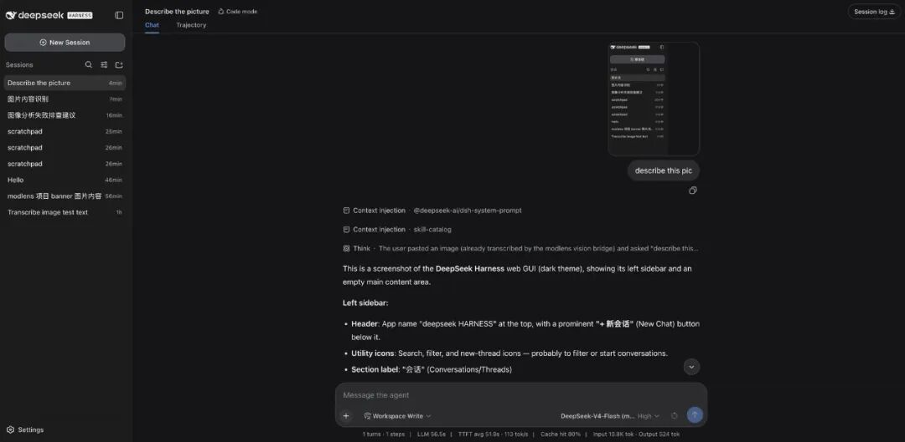
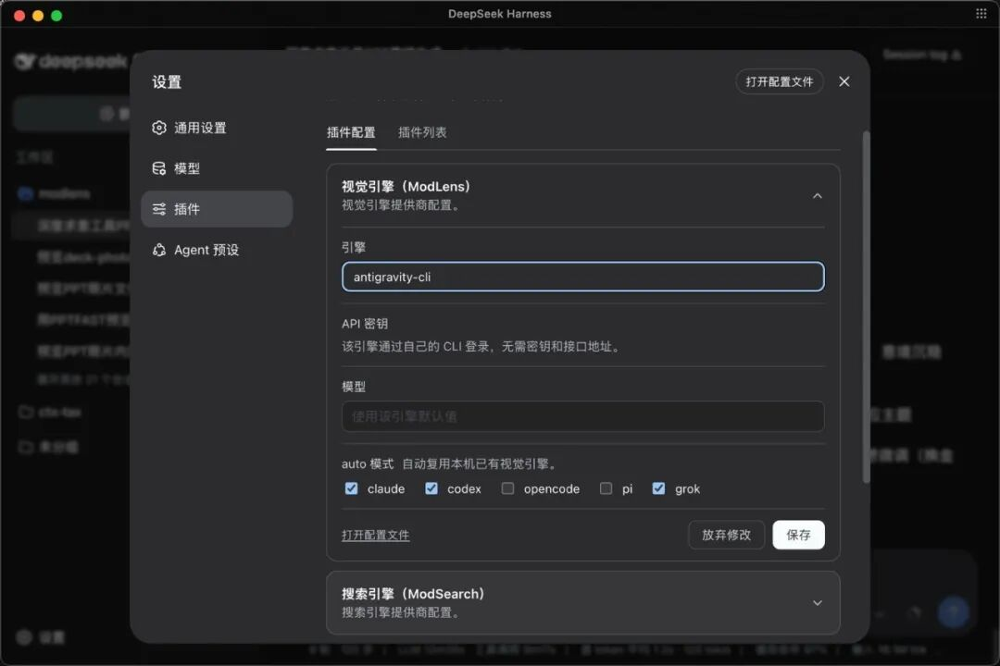

带纯文本模型干活，你一定遇过这三关：
场景一：让它排查 UI bug。 你截了张报错截图想问"哪里有问题"，它回你"我无法查看图片"。你只能自己先把报错文字打出来再发。你想要的其实是：贴图直接问。
场景二：让它按设计稿还原页面。 设计稿在 Figma 里，你导出图片发过去——它看不到。你只能自己先把布局、颜色、字号全部用文字描述一遍。你想要的其实是：它直接"看到"设计稿。
场景三：多模态模型太贵。 你想用便宜的纯文本模型干所有活——包括看图。你想要的其实是：不需要换模型也能识别图片。
这三个场景，modlens（作者 liustack，star 3.8k）一起解决：不换模型，外挂视觉引擎。你贴一张图，它调 Gemini、OpenAI 或 Anthropic 的视觉能力把图转成结构化文字证据，纯文本模型拿到的是具体描述——不需要视觉能力，不需要换模型。
● ● ●
本机实录（dsh v0.1.1-rc.2，临时 profile ml06）：
$ dsh plugin --profile ml06 add @liustack/modlens@latest
Done in 868ms using pnpm v11.24.0
868ms，npm 成品包秒装。--dump-config 对账：装前 78 条，装后 79 条，多的那行 - id: modlens（dump 第 315-316 行）。
装之前先看版本通道：modlens 的 npm 包版本对应 DSH 版本——v3.25.4 当前适配 dsh 全线（rc.8 到 alpha.2），rc.2 + @latest 实测可用。
● ● ●
装完不需要学新交互——正常聊天，粘贴图片，提问。skill 自动触发：图片交给视觉引擎，结构化的文字证据返回给模型，答案基于实际图片内容。
modlens 在 dsh 里有两种粘贴玩法。玩法①：直接粘贴。 贴进来的图片自主转换成文件路径进输入框，modlens_read_image 工具接手读图——和 OpenCode、Pi 同款交互。玩法②：切到 vision 模型变体。 选择器里选带 (modlens vision) 后缀的模型（选择器有记忆，选一次就行），缩略图直接可见、所见即所得。
变体由插件自动发现生成：每条承载纯文本模型的 provider 路由各得一组包装条目——DeepSeek-V4-Flash (modlens vision)、DeepSeek-V4-Pro (modlens vision)。两家自己的视觉型号（含 GLM-5.3-Flash）自动排除。走哪条通路由 host 依据真实模型元数据逐个裁决：只有被元数据确认纯文本的模型才会被接管，视觉模型因此保留原生贴图。
举个具体使用场景。你在排查一个前端 bug，截了张控制台的报错截图，直接粘贴进 dsh 会话问"哪里有问题"。modlens 检测到你用的是纯文本模型，自动把图发给视觉引擎，引擎返回结构化的文字描述——报错信息、出错的文件行号、建议的修复方向——纯文本模型拿到这些文字就能继续分析和修复。全程不需要你手动描述截图内容。

图：DSH 粘贴识图实拍——贴图直接问，不需要保存文件（官方仓库截图）
图：DSH 粘贴识图实拍——贴图直接问，不需要保存文件（官方仓库截图）
dsh 设置页还有一张「插件 → 插件配置」里的 ModLens 卡片：切换引擎、勾选 auto 模式复用本机哪些 CLI 的登录态，在网页上点几下保存就生效——不需要动任何配置文件。卡片里还会显示当前哪些引擎可用、哪些缺 key，配置状态一目了然。
多密钥也支持：配好多个 key 用英文逗号分隔，鉴权、限流或配额失败时自动轮换到下一把，其他失败跳过剩余密钥并继续走现有的 provider 故障转移。使用不钉死 provider 时所有配好的引擎排成一条链——快车道先试，agent CLI 兜底，第一个可用结果胜出。

图：dsh 设置页的「视觉引擎（ModLens）」配置卡片（官方仓库截图）
图：dsh 设置页的「视觉引擎（ModLens）」配置卡片（官方仓库截图）
● ● ●
modlens 不绑定任何单一视觉服务。视觉来源一共十个：六个内置 provider 配好任意一个就能用，加四家本机 agent CLI 的登录态可以直接复用。先看内置的：
| Provider | 需要什么 | 单次识别 |
|---|---|---|
| Gemini API | 免费 key，三分钟领取 | 5-10 秒 |
| OpenAI 兼容 | 任意兼容端点（key + baseUrl + model） | 5-10 秒 |
| Anthropic | Anthropic API key | 5-10 秒 |
| Antigravity CLI | 免费，浏览器登录一次 | 15-45 秒 |
| Claude CLI | 已登录的 Claude Code | 20-45 秒 |
| Kimi CLI | 已登录的 Kimi Code | 20-45 秒 |
不钉死 provider 时，所有配好的引擎组成一条故障转移链：快车道先试，agent CLI 兜底，第一个可用结果胜出，每次尝试都记录在 meta.attempts 里——回退永远不是无声的。多密钥用英文逗号分隔，鉴权、限流或配额失败时自动轮换到下一把，其他失败跳过剩余密钥并继续走现有的 provider 故障转移。
还有一套guard 检测（src/guard/modelSniff.ts）：先嗅探当前模型是否已有原生视觉——有的话 modlens 自动让路，绝不重复识别。视觉模型保留原生贴图，纯文本模型才走外挂引擎。检测依据是真实的模型元数据——不是配置文件里的开关，Guard 会检查模型的实际输入模态列表来做判断。
● ● ●
src/ 全部 TypeScript 共约 9700 行（不含测试），五个核心模块。
视觉引擎池（src/providers/，八个文件）：六个内置 provider 各自实现统一的视觉接口，故障转移链按优先级依次尝试。Gemini API 走 REST、Antigravity CLI 走本地进程、Claude CLI 复用已有订阅——同一个接口适配六种来源。
图片分析（src/analyzer.ts，907 行）：视觉引擎返回原始描述后，analyzer 把它结构化——全文转录、按阅读顺序划分的版面区块、实体与关系列表。纯文本模型拿到的是结构化 JSON 证据，不是一段含混的描述文字。
模型嗅探（src/guard/modelSniff.ts，356 行）：检测当前模型是否有原生视觉。有的话 modlens 让路——视觉模型保留原生贴图，纯文本模型才走外挂引擎。检测依据是真实的模型元数据，不是配置文件里的开关。
跨 harness 粘贴恢复（src/recoverPaste/）：Claude Code、Codex、OpenCode、Pi 的会话文件里如果有粘贴图片的记录，modlens 可以复用那些登录态来做识别——一次安装，多端可用。
冷却机制（src/cooldown.ts，402 行）：provider 失败后进入冷却期——不会每次都撞同一堵墙，冷却到期自动恢复参与故障转移链，避免一个 provider 挂了拖慢整条链路。
粘贴检测（src/imageInput.ts，311 行）：检测用户粘贴进会话的图片——自动转换为文件路径进输入框，和 OpenCode、Pi 同款交互，不需要先保存成文件再提供路径。
和前几期连线：dsh-context 加观察窗，routing-suite 换挡位，agent-teams 组队伍，better-sidebar 搭工作台，modlens 给纯文本模型装了眼睛——五个插件五个方向，内核一行不动。
● ● ●
下一篇继续探险——dsh-web 全家桶、hindsight 记忆系统、dsh-vision-toolkit 都在候选清单上，或者你来点名。
源码地址：